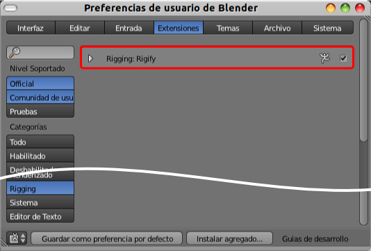

Rigging
Llamamos rigging al proceso por el que construimos un esqueleto con sus cadenas de huesos para que funcionen según nuestras necesidades. Esto puede ser un proceso muy simple o un trabajo endiabladamente enrevesado, no sólo porque haya multitud de cadenas sino porque esas cadenas pueden llevar implícitas muchas restricciones.
¿Queremos ver el comienzo de un rigging de un humanoide?. Hacemos Archivo/Preferencias de usuario/Extensiones y dentro del apartado Rigging activamos Rigify.
Ahora al sacar un esqueleto (Añadir/Esqueleto) disponemos de una segunda opción Human (Meta-Rig).
Este rig humanoide es en realidad un ente muy complejo, y no estamos hablando de la cantidad de huesos que presenta. Se trata de una extensión con un potencial mucho más ambicioso que la creación de los huesos. Esto no es más que el principio, pero su uso excede con creces los propósitos de Blender: 3D en la Educación.
A nosotros nos viene bien la muestra para disponer rápidamente de un ejemplo de comienzo de rigging. ¿Por qué "comienzo"? Pues porque, tal y como hemos dicho, esto no es más que la creación de cadenas de huesos, conectados o no, pero no tienen restricciones, más allá de la que concede el parentesco.
Orientación del esqueleto
Hay que entender la creación del esqueleto como una fase previa a la animación, casi independiente. Por eso su colocación no está determinada por la pose que tendrá el personaje en la escena sino en función del proceso correcto para el rigging. En ese sentido tendremos siempre presente que si estamos diseñando un humanoide con una simetría, este tiene que mirar al frente desde "NumPad 1" y se mostrará de perfil en "NumPad 3". Bajo ningún concepto se mostrará frontal en este último punto de vista y mucho menos en "NumPad 7".
Esto es así por varios motivos, unos técnicos (ejes Locales vs ejes Globales), y otros procedimentales como la ayuda Simetría X, que veremos más adelante y que sólo funciona bien si hemos cumplido con lo dicho.
Transformaciones
Las ediciones básicas del tipo desplazar ("G"), escalar ("S") y rotar ("R") todo el personaje sin estar creando poses las haremos siempre en Modo Objeto  .
.